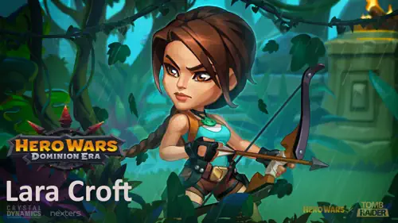

Teleportada por um portal antigo, a lendária aventureira Lara Croft agora leva sua agilidade incomparável e precisão mortal aos campos de batalha de Dominion. Pronto para desbloquear todo o potencial dela?

Guia da Lara Croft - Hero Wars: Dominion Era, um jogo desenvolvido pela Nexters.
A lendária Tomb Raider traz suas extraordinárias habilidades de combate e astúcia arqueológica para Dominion. Como uma mortal atiradora de retaguarda, ela elimina os inimigos com precisão antes que alcancem sua equipe.
Sinergia com Acertos CrÁticos – Ela se beneficia bastante de artefatos e glifos relacionados a crÁticos, tornando seu potencial explosivo muito forte.
Buff para a Equipe – Seu artefato de arma aumenta o Ataque FÁsico de toda a equipe, melhorando o DPS geral nas batalhas.
Escalonamento de Agilidade – Como heroÁna baseada em Agilidade, a Lara ganha atributos ofensivos e defensivos extras que escalam bem no fim do jogo.
FlexÁvel nas Equipes – Funciona bem com aliados baseados em crÁticos e pode se encaixar em várias formações de ataque fÁsico.
⌠Contras
Contra-atacada por Heróis Anti-CrÁtico – Heróis como Helios e Amira anulam diretamente o dano dependente de crÁticos da Lara.
Dependente de Sobrevivência – Precisa de suporte em vida e defesa; caso contrário, pode ser eliminada rapidamente por equipes explosivas.
Dependência de Artefatos – Seu potencial máximo exige alto investimento em artefatos, especialmente sua arma.
Vulnerável a Controle – Atordoamentos, silêncios e desativações podem interromper seu ciclo de dano, reduzindo sua efetividade em lutas prolongadas.
Mais Fraca Sem CrÁticos – Se sua chance crÁtica for suprimida, seu dano geral cai significativamente.
Prioridade de Upgrade das Habilidades da Lara Croft - Hero Wars: Dominion Era
Domine as habilidades da Lara na ordem correta para maximizar seu potencial de dano. Este guia para iniciantes explica quais habilidades priorizar primeiro para obter o melhor desempenho.
Prioridade de Evolução:ALTA – Deve ser sua segunda prioridade, pois aumenta drasticamente todo o dano da Lara. Acertos crÁticos são essenciais para atiradores, e esta habilidade faz com que seus ataques básicos e outras habilidades causem muito mais dano. Funciona especialmente bem com o passivo de tiro duplo.
Habilidade de Ascensão: RaciocÁnio CrÁtico Absoluto garante acertos crÁticos contra inimigos atordoados. É uma melhoria poderosa, mas exige sinergia de equipe, sendo menos importante para iniciantes.
Vex oferece estatÁsticas ofensivas semelhantes à s do Fenris (Ataque FÁsico e Penetração de Armadura), mas foca em amplificar o dano fÁsico por meio de cargas de Feridas Profundas. Isso funciona bem com os ataques básicos múltiplos da Lara, permitindo que ela aplique rapidamente várias cargas que aumentam o dano dos ataques fÁsicos de todos os aliados.
Mara oferece a menor sinergia para a Lara Croft, trazendo Ataque Mágico e Defesa Mágica que não beneficiam seu kit de dano fÁsico. Embora o aumento da duração dos efeitos de controle possa ajudar com o atordoamento do Disparo Preciso, os atributos principais são amplamente desperdiçados nela, tornando esta uma escolha subótima em comparação com pets ofensivos.
Melhores Visuais para Lara Croft – Hero Wars: Dominion Era
As habilidades da Lara escalam com Ataque FÁsico, tornando os visuais ofensivos a maior prioridade. Foque primeiro nos atributos de dano bruto e depois adicione sobrevivência quando sua ofensiva estiver maximizada.
Prioridade de Evolução:PRIORIDADE MÁXIMA – O visual mais forte da Lara. Todas as suas habilidades escalam com Ataque FÁsico, tornando este o upgrade mais impactante no geral.
Visual Antártida
Atributos Ganhos: Vida +213.290
Prioridade de Evolução:MÉDIA ALTA – Aumenta a sobrevivência contra assassinos e dano em área. Útil após evoluir seus principais visuais ofensivos.
Prioridade de Evolução:MÉDIA – Fornece proteção valiosa contra equipes mágicas (Orion, Krista & Lars, Arachne). Deve ser evoluÁdo após os principais visuais ofensivos.
Prioridade de Evolução dos Artefatos da Lara Croft - Hero Wars: Dominion Era
Maximize o potencial de dano da Lara com a ordem ideal de evolução dos artefatos. Priorize os que aumentam seus acertos crÁticos e ataque fÁsico para máxima eficiência em combate.
Artefato de Arma: Colar de Jade da Lara
Ganho de Atributos: Ataque FÁsico +33.459, Bônus de Equipe
Ganho de Atributos: Chance de Acerto CrÁtico +4.647, Ataque FÁsico +5.577
Prioridade de Evolução:ALTA – É tão importante quanto o artefato de arma. A Chance de Acerto CrÁtico tem sinergia direta com a habilidade RaciocÁnio CrÁtico da Lara, aumentando drasticamente seu dano. A combinação de chance crÁtica e ataque fÁsico torna este artefato extremamente valioso para seu papel de causadora de dano.
Prioridade de Evolução:Baixa – Bom para crescimento geral, mas não tão urgente em comparação com os outros glifos ofensivos.
Como Contra-atacar Lara Croft - Hero Wars: Dominion Era
Os contra-ataques à Lara Croft em Hero Wars: Dominion Era funcionam neutralizando seu foco em dano crÁtico e escalonamento de agilidade. Esses heróis exploram sua dependência de crÁticos e explosões fÁsicas para reduzir drasticamente sua efetividade em batalha.
Amira pune a dependência da Lara Croft em acertos crÁticos. Com sua habilidade Fúria Desesperada, ela concede a Lara um “desejo†que aumenta a chance crÁtica, mas faz com que todo acerto crÁtico erre. Isso anula completamente a principal fonte de dano da Lara, transformando seu potencial explosivo em ataques desperdiçados.
Melhor Bandeira de Guerra para Lara Croft - Hero Wars
As melhores Bandeiras de Guerra para Lara Croft em Hero Wars: Dominion Era são aquelas que amplificam seu dano fÁsico explosivo, atrapalham os inimigos ou fortalecem a sinergia geral da equipe. Essas bandeiras maximizam a eficiência de suas habilidades e sua sobrevivência em batalhas decisivas.
Bandeira de Guerra da Geada:
Essa bandeira reduz os nÁveis das habilidades inimigas a cada 18 segundos, enfraquecendo sua efetividade e dando à equipe da Lara uma vantagem maior em lutas prolongadas. A redução do poder das habilidades inimigas significa menos dano e efeitos de controle, permitindo que Lara sobreviva mais e cause mais dano.
BenefÁcio para Lara Croft e Equipe: Grande utilidade em PvP e Guerras de Guilda, já que torna os inimigos menos perigosos e ajuda o dano baseado em crÁticos da Lara a brilhar contra oponentes enfraquecidos.
Bandeira de Guerra dos Guerreiros Ágeis:
Acelera a recuperação de recarga para todos os Guerreiros, permitindo que eles usem suas habilidades mais rapidamente. Se Lara for usada junto com aliados Guerreiros, essa bandeira aumenta a sinergia da equipe e permite que a linha de frente habilite o dano da Lara de forma mais consistente.
BenefÁcio para Lara Croft e Equipe: Melhor quando combinada com composições cheias de Guerreiros, garantindo que sua equipe gire habilidades mais rápido e pressione antes que os oponentes possam contra-atacar.
Bandeira de Guerra da Decadência:
Essa bandeira reduz a cura da equipe inimiga em 10%, contra-atacando times defensivos com curadores fortes. Como Lara depende de explosão e crÁticos para eliminar inimigos rapidamente, reduzir a cura impede que os inimigos se recuperem e prolonguem a luta.
BenefÁcio para Lara Croft e Equipe: Excelente contra defesas com muitos curadores, tornando o dano explosivo baseado em crÁticos da Lara muito mais letal.
Melhores Times para Lara Croft - Hero Wars: Dominion Era
Melhores Times de Defesa para Lara Croft
#
Tabela: Melhores Times de Defesa para Lara Croft
Galahad, Lyria, Tristan, Sebastian, Lara Croft, Axel
Aurora, Galahad, Tristan, Sebastian, Lara Croft, Axel
Qing Mao, Tristan, Sebastian, Heidi, Lara Croft, Thea, Axel
No entanto, sua dependência de acertos crÁticos a torna vulnerável a contra-ataques especÁficos como Helios e Amira, o que significa que a composição do time e as bandeiras de guerra são cruciais para liberar todo o seu potencial. Ao investir em seus pontos fortes e cobrir suas fraquezas com aliados e suportes adequados, Lara Croft pode ser uma heroÁna confiável tanto nas versões Web quanto Facebook do jogo.
Você gostou do nosso Guia da Lara Croft para Hero Wars PC? Há algo que não entendeu ou gostaria de sugerir mudanças? Convidamos você a se juntar à nossa sessão de comentários na página do Alexandre Games Blog. Não hesite em expressar sua opinião, clarificar suas dúvidas e compartilhar sua sugestões. Clique no botão abaixo para começar: